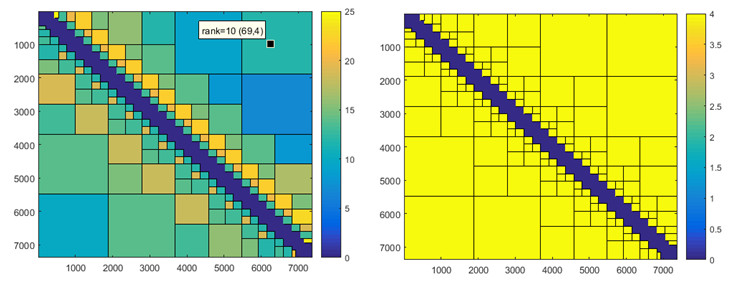

Hierarchical matrices
Hierarchical matrices, or H-matrices in short, allow for a compression of the Green function matrices, as well as for fast and low-memory matrix manipulations. Our H-matrix compression scheme follows Boerm et al., Engineering Analysis with Boundary Element 27, 405 (2003). In general the H-matrices remain hidden within the iterative BEM solver classes.
Contents
Working principle
H-matrices build on the cluster tree class. The basic idea behind the approach is that for clusters sufficiently far apart one doesn't have to compute all Green function elements but can submit the sub-matrices to some sort of compression. The approach is inspired by the multipole expansion, where cluster interactions are approximated through a truncated series of multipole interactions. In our H-matrix implementation, however, we use a compression scheme where the sub-matrices are approximated through low-rank matrices. The advantages of this approach are that it works automatically, and thus can be also employed for layer structure interactions, and that several matrix manipulations, such as addition, subtraction, multiplication, or inversion can be approximately performed with H-matrices.
To determine whether a sub-matrix can be submitted to a low-rank approximation, one must provide a function such as
% function for admissibility
fadmiss = @( rad1, rad2, dist ) 2.5 * min( rad1, rad2 ) < dist;
This function, which in the above form is returned by bemiter.options, must be added to the option structure passed to the BEM solvers. The function takes three arguments, namely the radii rad1 and rad2 of the clusters' bounding boxes, and the distance dist between the clusters, and returns true if the two clusters can be submitted to a low-rank approximation (using the adaptive cross approximation, ACA) and false otherwise.
The other option arguments passed to the iterative BEM solvers, which control the H-matrix performance, are as follows:
- htol is the tolerance for the H-matrix compression with the default setting htol=1e-6. It controls the accuracy of the low-rank approximation and should be set to a value between 1e-4 and 1e-8.
- kmax is the maximum rank for H-matrix compression with the default seeting kmax=[4,100]. The larger value controls the maximum rank for the low-rank approximation of the Green functions, and should be chosen sufficiently large. The smaller value determines the maximum rank for H-matrix manipulations. In our approach we use H-matrix manipulations only for the approximate solution of the BEM equations, which serve as a preconditioner for the iterative BEM solver. Thus, the larger value of kmax controls the overall accuracy of the H-matrix compression (and should be chosen sufficiently large), whereas the smaller value only influences the performance of the preconditioner (and should be chosen rather small to obtain a significant speedup of the H-matrix manipulations).
Examples
Consider the BEM solver for a gold nanorod
% options for BEM simulation op = bemoptions( 'sim', 'ret', 'iter', bemiter.options ); % table of dielectric functions epstab = { epsconst( 1 ), epstable( 'gold.dat' ) }; % initialize nanorod p = trirod( 20, 800, [ 15, 15, 500 ] ); p = comparticle( epstab, { p }, [ 2, 1 ], 1, op ); % set up BEM solver and perform initialization bem = bemsolver( p, op ); bem = bem( 800 );
To obtain some information about the compression and manipulation of the H-matrices we type at the Matlab prompt
>>hinfo(bem)
Compression Green functions : 0.141079 Compression auxiliary matrices : 0.098572
Total time for H-matrix operations : 62.110 sec aca : 17.73 % add : 1.91 % dcopy : 15.13 % lu : 2.08 % mul_BLAS : 18.44 % inv_LAPACK : 0.06 % rest : 44.64 %
One observes that the Green function (kmax=100) and auxiliary (kmax=4) matrices are compressed by factors of approximately 0.14 and 0.10. Additionally, we obtain a timing for the H-matrix manipulation performed by the MEX files distributed with the toolbox.
We might now access the Green functions and auxiliary matrices through
% get Green functions and surface derivatives [ G1, H1, G2, H2 ] = deal( bem.G1, bem.H1, bem.G2, bem.H2 ); % auxiliary matrices for preconditioner bem.sav
k: 0.0079
nvec: [7378x3 double]
G1i: [1x1 hmatrix]
G2i: [1x1 hmatrix]
eps1: [7378x7378 double]
eps2: [7378x7378 double]
Sigma1: [1x1 hmatrix]
Deltai: [1x1 hmatrix]
Sigmai: [1x1 hmatrix]For a more detailed description of the auxiliary matrices see F. J. Garcia de Abajo and A. Howie, Phys. Rev. B 65, 115418 (2002). One can manipulate the H-matrices similar to normal matrices. Within the toolbox several H-matrix manipulations are implemented
% addition and subtraction of H-matrices G1 + H1; G1 - H1; % multiplication of H-matrices, inversion of H-matrices Sigma1 = H1 * inv( G1 );
Multiplication, inversion, and LU-decomposition of H-matrices are usually slow, and we recommend to use small values for kmax, as automatically done within the internal toolbox routines. To inspect the rank of the sub-matrices we can use
% plot rank for Green function matrix plotrank( G2 ); colorbar % plot rank for low-rank matrix plotrank( bem.sav.G2i ); colorbar

For the Green function matrix we observe that all sub-matrices can be approximated by low-rank approximations with a maximum rank smaller or equal to 25. With the data cursor we can inspect both the rank of the sub-matrices as well as the cluster pair indices (here 69 and 4). For the visiulization of the corresponding clusters one might like to call plotcluster(bem.G2.tree), as described in the cluster tree section. The blue block along the diagonal of the matrix indicates full matrices that cannot be submitted to a low-rank approximation.
For the auxiliary matrix G2i we see that the rank for all low-rank matrices is min(kmax)=4. Thus, these matrices as well as the solutions of the BEM equations are only approximate. However, this is not a problem since these solutions are only used for the preconditioner, whereas the full BEM solutions employ the Green functions and their surface derivatives. The accuracy of the iterarive solvers is thus governed by htol and max(kmax).
Future improvements
From our experience it appears that the main problem for iterative BEM solvers is the choice for a suitable preconditioner. Without any preconditioner a huge number of iterations may be needed, which leads to a very weak performance. In our present approach we solve the full set of BEM equations, however, using low-rank approximations for the Green function matrices. The corresponding simulations can be significantly faster than full BEM simulation, on the other hand most of the computer time is needed for the computation of the preconditioner matrices. It might be that there exist other, more simple preconditioner that could significantly speed up the simulations.
Another critical issue of our approach is the H-matrix library. Although we have tried our best to make the H-matrix manipulations fast and efficient, it is likely that there is some room for improvements. From the hinfo timing we observe that about 50 percent of the computer time is needed for operations that cannot be directly assigned to specific tasks. At present it is unclear whether things could be improved for better MEX compilation options or different compilers (we use mingw for Windows and the GNU compiler for Linux), or by further optimizing the C++ code.
Copyright 2017 Ulrich Hohenester